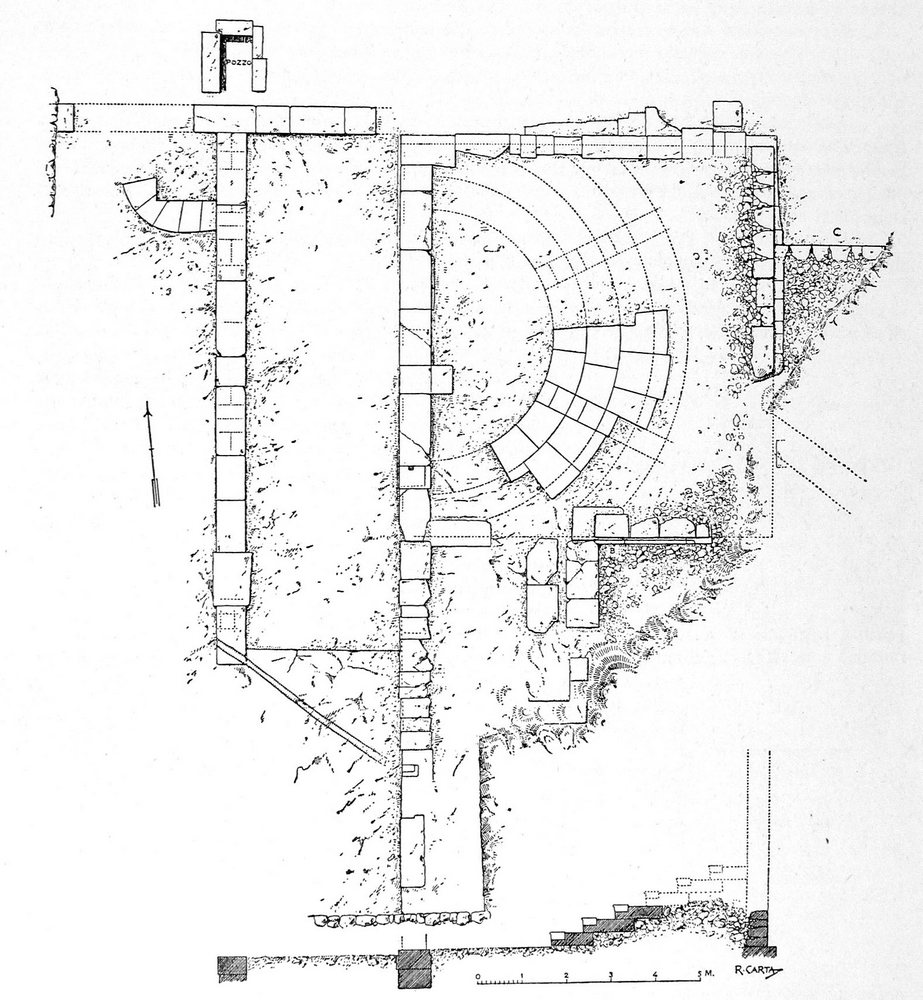
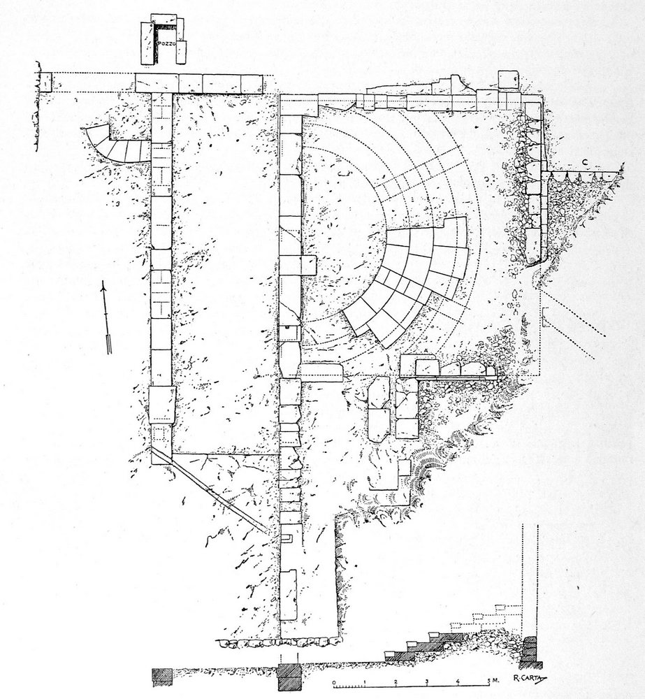
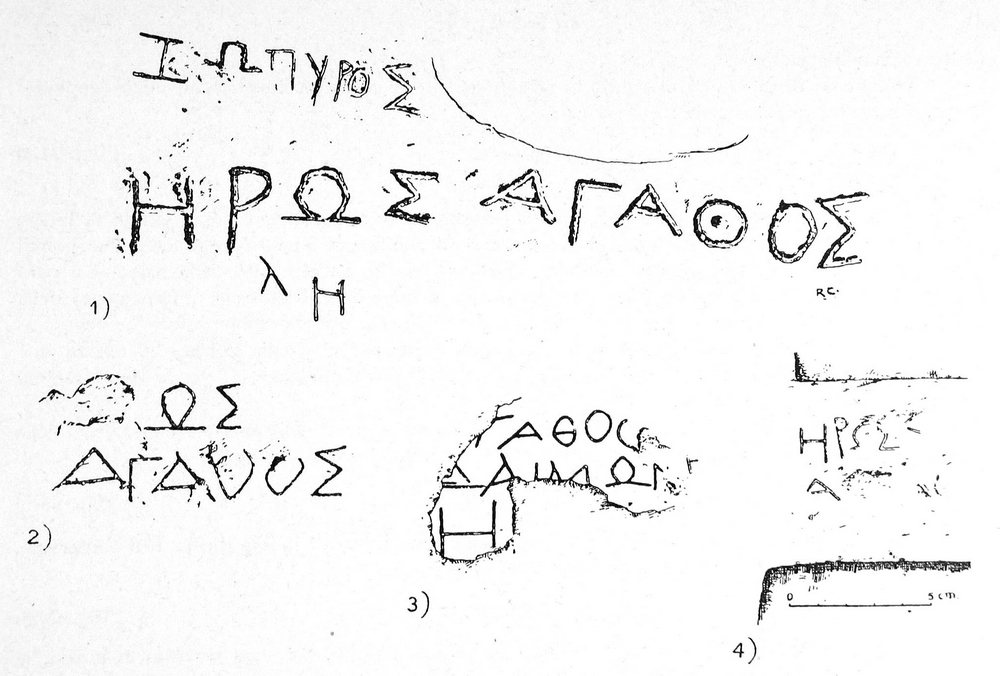

Akrai..
La Storia L'impianto Urbano Le Mura Urbiche Le Necropoli I Santoni Il Bouleuterion Il Teatro Il Tempio Arcaico Le Latomie I templi ferali Studi e RicercheLa storia
 L’antica Akrai, ad ovest rispetto alla moderna Palazzolo Acreide, è la prima delle subcolonie di Siracusa. La sua ubicazione sull’Acremonte, autentica fortezza naturale, altopiano posto tra le due valli dei fiumi Tellaro a sud e Anapo a nord, dimostra la finalità strategica della fondazione, che consentiva il controllo dell’entroterra, a difesa della madrepatria.
Poche le notizie storiche. Fu fondata, secondo lo storico Tucidide, 70 anni dopo la fondazione della madrepatria , nel 664/663 a.C. Plutarco ricorda Akrai in relazione alla marcia di Dione contro Siracusa nel 357 a.C. A seguito del trattato tra Roma e Siracusa nel 263 a.C. Akrai, insieme con Leontinoi , Megara, Eloro, Noto e Taormina, fece parte del regno di Ierone II. Fu questo il periodo di maggiore prosperità della città, favorito da un lungo periodo di pace, durante il quale furono costruiti alcuni dei monumenti più importanti e fu attiva una zecca della quale si conosce un’emissione bronzea con la rappresentazione di Persefone e Demetra. Nel 214 a.C., secondo quanto riferisce Livio, il condottiero siracusano Ippocrate si rifugiò ad Akrai dopo la sconfitta subita ad opera di Marcello. Da Plinio sappiamo che, dopo la conquista romana, fece parte delle civitates stipendiariae (le città soggette a tributo).
Dopo un lungo periodo di oscurità, la città tornò a fiorire tra il IV ed il V d.C., divenendo un centro di notevole importanza come dimostrano le grandi catacombe e i diffusi ipogei funerari presenti nel territorio circostante. Fu presa dagli Arabi nell’827; nei secoli successivi, la Palatiolum medievale si sviluppò attorno ad un castello, edificato nei primi anni del regno normanno, e fu distrutta dal il terremoto del 1693. Sullo stesso luogo fu ricostruita l’attuale Palazzolo Acreide, dall’aspetto tipicamente barocco, ricalcando l’antico tracciato urbanistico.
L’antica Akrai, ad ovest rispetto alla moderna Palazzolo Acreide, è la prima delle subcolonie di Siracusa. La sua ubicazione sull’Acremonte, autentica fortezza naturale, altopiano posto tra le due valli dei fiumi Tellaro a sud e Anapo a nord, dimostra la finalità strategica della fondazione, che consentiva il controllo dell’entroterra, a difesa della madrepatria.
Poche le notizie storiche. Fu fondata, secondo lo storico Tucidide, 70 anni dopo la fondazione della madrepatria , nel 664/663 a.C. Plutarco ricorda Akrai in relazione alla marcia di Dione contro Siracusa nel 357 a.C. A seguito del trattato tra Roma e Siracusa nel 263 a.C. Akrai, insieme con Leontinoi , Megara, Eloro, Noto e Taormina, fece parte del regno di Ierone II. Fu questo il periodo di maggiore prosperità della città, favorito da un lungo periodo di pace, durante il quale furono costruiti alcuni dei monumenti più importanti e fu attiva una zecca della quale si conosce un’emissione bronzea con la rappresentazione di Persefone e Demetra. Nel 214 a.C., secondo quanto riferisce Livio, il condottiero siracusano Ippocrate si rifugiò ad Akrai dopo la sconfitta subita ad opera di Marcello. Da Plinio sappiamo che, dopo la conquista romana, fece parte delle civitates stipendiariae (le città soggette a tributo).
Dopo un lungo periodo di oscurità, la città tornò a fiorire tra il IV ed il V d.C., divenendo un centro di notevole importanza come dimostrano le grandi catacombe e i diffusi ipogei funerari presenti nel territorio circostante. Fu presa dagli Arabi nell’827; nei secoli successivi, la Palatiolum medievale si sviluppò attorno ad un castello, edificato nei primi anni del regno normanno, e fu distrutta dal il terremoto del 1693. Sullo stesso luogo fu ricostruita l’attuale Palazzolo Acreide, dall’aspetto tipicamente barocco, ricalcando l’antico tracciato urbanistico.
L'impianto urbano


 Akrai sorge sulla sommità di un colle , di difficile accesso; ed era dotata di una cinta muraria, che seguiva il margine della terrazza, dove si aprivano due porte: quella chiamata “selinuntina” ad ovest e quella detta “siracusana” ad est.
Le ricerche più recenti hanno evidenziato un sistema urbano che presenta una razionale ed omogenea distribuzione degli spazi, studiata anche in relazione alle condizioni ambientali del sito. Una strada (plateia), con orientamento E-W, costituiva l’asse viario più importante e collegava le due porte della città. Di essa è stato messo in luce un tratto di circa 250 m, largo 4,00 m, con pavimentazione in pietra lavica di età tardo-ellenistica. Tale asse era intercettato da strade trasversali ( stenopoi), larghe m.3,00 circa, due a Sud e cinque a Nord rispetto all’asse stradale. Tali stenopoi incrociano la plateia obliquamente e quelli a nord non sono allineati con quelli a sud. L’impianto urbano, che finora è documentato con due fasi edilizie (età romana ed età ellenistica), è riconducibile al VI sec. a.C. Ad ovest, la plateia si apriva in una piazza, anch’essa pavimentata, mentre ad est costeggiava la scena del teatro, che era perfettamente inserito nello schema urbano. Quel che oggi è visibile dell’antica città, comprende : il teatro, il vicino bouleuterion , il tempio arcaico, che segna l’acropoli sacra e le adiacenti latomie dell’Intagliata e dell’Intagliatella. All’esterno della città, sulle pendici sud dell’Acremonte, si trovano due aree sacre di grande interesse, i “ Templi Ferali “ ed “ I Santoni”; sui vicini Colle Orbo e Pinita, si estendevano le necropoli della città.
Akrai sorge sulla sommità di un colle , di difficile accesso; ed era dotata di una cinta muraria, che seguiva il margine della terrazza, dove si aprivano due porte: quella chiamata “selinuntina” ad ovest e quella detta “siracusana” ad est.
Le ricerche più recenti hanno evidenziato un sistema urbano che presenta una razionale ed omogenea distribuzione degli spazi, studiata anche in relazione alle condizioni ambientali del sito. Una strada (plateia), con orientamento E-W, costituiva l’asse viario più importante e collegava le due porte della città. Di essa è stato messo in luce un tratto di circa 250 m, largo 4,00 m, con pavimentazione in pietra lavica di età tardo-ellenistica. Tale asse era intercettato da strade trasversali ( stenopoi), larghe m.3,00 circa, due a Sud e cinque a Nord rispetto all’asse stradale. Tali stenopoi incrociano la plateia obliquamente e quelli a nord non sono allineati con quelli a sud. L’impianto urbano, che finora è documentato con due fasi edilizie (età romana ed età ellenistica), è riconducibile al VI sec. a.C. Ad ovest, la plateia si apriva in una piazza, anch’essa pavimentata, mentre ad est costeggiava la scena del teatro, che era perfettamente inserito nello schema urbano. Quel che oggi è visibile dell’antica città, comprende : il teatro, il vicino bouleuterion , il tempio arcaico, che segna l’acropoli sacra e le adiacenti latomie dell’Intagliata e dell’Intagliatella. All’esterno della città, sulle pendici sud dell’Acremonte, si trovano due aree sacre di grande interesse, i “ Templi Ferali “ ed “ I Santoni”; sui vicini Colle Orbo e Pinita, si estendevano le necropoli della città.
{kind=link}
Le mura urbiche
 La cinta muraria, correndo per la maggior parte lungo il ciglio dell’Acremonte, si appoggiava alle difese naturali del terreno, inglobando un’area dell’estensione di circa…..Ne restano tuttavia pochissime tracce, nei pressi dell’ingresso dell’area archeologica. Sul lato occidentale, al centro di un’ampia rientranza dell’altopiano, si apriva probabilmente la “porta selinuntina” di cui parla un’iscrizione (Kaibel 217), dalla quale usciva la strada che conduceva in direzione di Selinunte. Un’altra porta si apriva lungo il lato orientale, dalla parte di Siracusa.
Le mura sono state datate, su base tipologica, ad un’età compresa fra gli inizi del IV sec. a.C. e la seconda metà del III sec. a.C.
La cinta muraria, correndo per la maggior parte lungo il ciglio dell’Acremonte, si appoggiava alle difese naturali del terreno, inglobando un’area dell’estensione di circa…..Ne restano tuttavia pochissime tracce, nei pressi dell’ingresso dell’area archeologica. Sul lato occidentale, al centro di un’ampia rientranza dell’altopiano, si apriva probabilmente la “porta selinuntina” di cui parla un’iscrizione (Kaibel 217), dalla quale usciva la strada che conduceva in direzione di Selinunte. Un’altra porta si apriva lungo il lato orientale, dalla parte di Siracusa.
Le mura sono state datate, su base tipologica, ad un’età compresa fra gli inizi del IV sec. a.C. e la seconda metà del III sec. a.C.
Le necropoli
 Le necropoli dell’antica Akrai si estendono sul colle della Pineta e sul colle Orbo, ad est della città.
La prima, scavata a varie riprese dal barone Judica tra il 1810 e il 1817, occupa la sommità pianeggiante del dosso, interessa un’area estesa circa 7 ettari e rimase in uso tra il VII ed i primi decenni del V secolo a.C. Le tombe sono del tipo a fossa rettangolare coperta da lastroni, con deposizioni orientate ad est. Dopo gli scavi Judica, la necropoli fu quasi completamente devastata da scavi clandestini; la maggior parte dei corredi andò dispersa, mentre parte confluì nella collezione Bonelli – Ferla, che a sua volta fu acquisita alla collezione Judica.
Della necropoli di Colle Orbo è a tutt’oggi difficile definire la reale estensione . Oggetto anch’essa delle esplorazioni di Gabriele Judica nel 1809, è costituita anch’essa da tombe a fossa, più recenti rispetto a quelle della Pineta: le tombe di età ellenistica trovano confronti, per la tipologia e i corredi, con le coeve necropoli siracusane
Le necropoli dell’antica Akrai si estendono sul colle della Pineta e sul colle Orbo, ad est della città.
La prima, scavata a varie riprese dal barone Judica tra il 1810 e il 1817, occupa la sommità pianeggiante del dosso, interessa un’area estesa circa 7 ettari e rimase in uso tra il VII ed i primi decenni del V secolo a.C. Le tombe sono del tipo a fossa rettangolare coperta da lastroni, con deposizioni orientate ad est. Dopo gli scavi Judica, la necropoli fu quasi completamente devastata da scavi clandestini; la maggior parte dei corredi andò dispersa, mentre parte confluì nella collezione Bonelli – Ferla, che a sua volta fu acquisita alla collezione Judica.
Della necropoli di Colle Orbo è a tutt’oggi difficile definire la reale estensione . Oggetto anch’essa delle esplorazioni di Gabriele Judica nel 1809, è costituita anch’essa da tombe a fossa, più recenti rispetto a quelle della Pineta: le tombe di età ellenistica trovano confronti, per la tipologia e i corredi, con le coeve necropoli siracusane
I santoni

 Ubicati in un contesto suggestivo , lungo le pendici meridionali di Colle Orbo, verso il fondo valle, i c.d “ Santoni “ o “ Santicelli” rappresentano un caso eccezionale di documentazione, attraverso una serie di rilievi , del culto della dea frigia , Cibele. Si tratta di dodici rilievi , inquadrati all’interno di nicchie arcuate, forse sistemati come piccoli edifici di culto (naiskoi).
Sconosciuti agli studiosi del XVI e XVII secolo, si deve ad Ignazio Paternò Castello, Principe di Biscari, la prima menzione nel 1771 , mentre sono del 1787 le rappresentazioni di Jean Houel. E’ a Luigi Bernabò Brea ( 1956 ) che si deve la definitiva esegesi delle raffigurazioni come espressione del culto di Cibele , confermata da recenti studi.
La dea, riconoscibile dagli attributi , quali il polos sul capo , il timpano (sorta di tamburello) e la patera (sorta di larga ciotola), con i leoni ai piedi del trono o sulle gambe, è raffigurata in genere seduta (è in piedi solo in due dei rilievi), ed è in genere accompagnata da figure collocate o all’altezza della testa , o delle gambe , spesso su più registri, o sulle pareti laterali della nicchia . Si tratta di figure legate al culto di Cibele , come Hermes con il caduceo, Ecate ( fanciulla con la fiaccola ) , i Coribanti (seguaci del culto), Marsia , Attis, i Dioscuri . Anche le altre figure , non ben leggibili, erano connesse con la personalità della dea , più che ai riti celebrati in suo onore. Il culto era originario dalla Frigia e si diffuse nel V a.C. in Attica e , da lì, nel mondo greco. La rappresentazione della dea, ripetuta più volte lungo il costone roccioso, trova riferimenti in analoghi santuari dell’Asia Minore, dove questo genere di culto è largamente praticato. La presenza delle figuri minori legate al culto della dea, che testimoniano formule innovative rispetto a quelle di ambiente attico, sono di grande interesse proprio per la particolare ubicazione di questo complesso, distante geograficamente dall’ambito frigio. Riguardo alla datazione , i confronti stilistici ed i pochi dati raccolti indicano una datazione tra l’avanzato III e gli inizi del II a.C.
Ubicati in un contesto suggestivo , lungo le pendici meridionali di Colle Orbo, verso il fondo valle, i c.d “ Santoni “ o “ Santicelli” rappresentano un caso eccezionale di documentazione, attraverso una serie di rilievi , del culto della dea frigia , Cibele. Si tratta di dodici rilievi , inquadrati all’interno di nicchie arcuate, forse sistemati come piccoli edifici di culto (naiskoi).
Sconosciuti agli studiosi del XVI e XVII secolo, si deve ad Ignazio Paternò Castello, Principe di Biscari, la prima menzione nel 1771 , mentre sono del 1787 le rappresentazioni di Jean Houel. E’ a Luigi Bernabò Brea ( 1956 ) che si deve la definitiva esegesi delle raffigurazioni come espressione del culto di Cibele , confermata da recenti studi.
La dea, riconoscibile dagli attributi , quali il polos sul capo , il timpano (sorta di tamburello) e la patera (sorta di larga ciotola), con i leoni ai piedi del trono o sulle gambe, è raffigurata in genere seduta (è in piedi solo in due dei rilievi), ed è in genere accompagnata da figure collocate o all’altezza della testa , o delle gambe , spesso su più registri, o sulle pareti laterali della nicchia . Si tratta di figure legate al culto di Cibele , come Hermes con il caduceo, Ecate ( fanciulla con la fiaccola ) , i Coribanti (seguaci del culto), Marsia , Attis, i Dioscuri . Anche le altre figure , non ben leggibili, erano connesse con la personalità della dea , più che ai riti celebrati in suo onore. Il culto era originario dalla Frigia e si diffuse nel V a.C. in Attica e , da lì, nel mondo greco. La rappresentazione della dea, ripetuta più volte lungo il costone roccioso, trova riferimenti in analoghi santuari dell’Asia Minore, dove questo genere di culto è largamente praticato. La presenza delle figuri minori legate al culto della dea, che testimoniano formule innovative rispetto a quelle di ambiente attico, sono di grande interesse proprio per la particolare ubicazione di questo complesso, distante geograficamente dall’ambito frigio. Riguardo alla datazione , i confronti stilistici ed i pochi dati raccolti indicano una datazione tra l’avanzato III e gli inizi del II a.C.
Il bouleuterion
 

 Il bouleuterion (la sede del senato della città) fu scoperto da Gabriele Judica nel 1820. Il monumento fu messo completamente in luce da Luigi Bernabò Brea nel 1944. E’ costituito da una cavea aperta verso ovest, all’interno di un vano quadrangolare, originariamente coperto. La cavea comprende sei file di sedili, divisi da due scalette in tre cunei. La piccola orchestra era semicircolare con piano in terra battuta . La sala era accessibile frontalmente , attraverso una porta mediana , di circa m.4 di altezza e l’oratore stava in piedi dinanzi all’assemblea riunita. E’ probabile che la facciata avesse un timpano ; incerta è anche la presenza di finestre sulla fronte.
Vicino al bouleuterion è visibile un pozzo , che insieme con altri garantiva l’approvvigionamento idrico alla città
Un cunicolo collega il bouleuterion alla parte superiore della cavea del teatro.
Il bouleuterion (la sede del senato della città) fu scoperto da Gabriele Judica nel 1820. Il monumento fu messo completamente in luce da Luigi Bernabò Brea nel 1944. E’ costituito da una cavea aperta verso ovest, all’interno di un vano quadrangolare, originariamente coperto. La cavea comprende sei file di sedili, divisi da due scalette in tre cunei. La piccola orchestra era semicircolare con piano in terra battuta . La sala era accessibile frontalmente , attraverso una porta mediana , di circa m.4 di altezza e l’oratore stava in piedi dinanzi all’assemblea riunita. E’ probabile che la facciata avesse un timpano ; incerta è anche la presenza di finestre sulla fronte.
Vicino al bouleuterion è visibile un pozzo , che insieme con altri garantiva l’approvvigionamento idrico alla città
Un cunicolo collega il bouleuterion alla parte superiore della cavea del teatro.
{kind=link}
{kind=link}
Il Teatro

 Il teatro fu scoperto nel 1824 da Gabriele Judica., al quale si deve lo scavo della scena, dell’orchestra e dei gradini più bassi della cavea, oltre ad interventi di restauro e di parziale ricostruzione. Lo scavo fu completato negli anni ’50 da Luigi Bernabò Brea.
Il teatro si adagia sul pendio del terreno, ma solo i cinque cunei mediani poggiano su di esso, mentre gli altri quattro ( due per lato), poggiano su fondazioni artificiali. La cavea , secondo i canoni tradizionali, si affaccia a nord, su un paesaggio naturale di straordinaria bellezza , dominato dall’Etna. Il monumento è di piccole dimensioni, un semicerchio perfetto, con nove cunei separati da otto scalette. I cunei non sono tutti uguali: il primo ed il secondo sono interamente rifatti, mentre gli altri sono stati parzialmente integrati. I gradini presentano il piano del sedile rialzato rispetto alla parte posteriore, che serviva per i piedi degli spettatori della fila soprastante; ciascuna fila corrisponde a due gradini delle scalette, ricavati da un solo blocco. L’orchestra è perfettamente semicircolare e la fronte del palcoscenico coincide con il diametro dell’orchestra. Mancano le parodoi (corridoi laterali per l’ingresso al teatro); l’accesso del pubblico alle gradinate avveniva frontalmente. L’impianto del teatro risale al III a.C. e fa parte della monumentalizzazione della città promossa da Jerone II. Ad epoca romana sono riferibili alcune modifiche .
Il teatro fu scoperto nel 1824 da Gabriele Judica., al quale si deve lo scavo della scena, dell’orchestra e dei gradini più bassi della cavea, oltre ad interventi di restauro e di parziale ricostruzione. Lo scavo fu completato negli anni ’50 da Luigi Bernabò Brea.
Il teatro si adagia sul pendio del terreno, ma solo i cinque cunei mediani poggiano su di esso, mentre gli altri quattro ( due per lato), poggiano su fondazioni artificiali. La cavea , secondo i canoni tradizionali, si affaccia a nord, su un paesaggio naturale di straordinaria bellezza , dominato dall’Etna. Il monumento è di piccole dimensioni, un semicerchio perfetto, con nove cunei separati da otto scalette. I cunei non sono tutti uguali: il primo ed il secondo sono interamente rifatti, mentre gli altri sono stati parzialmente integrati. I gradini presentano il piano del sedile rialzato rispetto alla parte posteriore, che serviva per i piedi degli spettatori della fila soprastante; ciascuna fila corrisponde a due gradini delle scalette, ricavati da un solo blocco. L’orchestra è perfettamente semicircolare e la fronte del palcoscenico coincide con il diametro dell’orchestra. Mancano le parodoi (corridoi laterali per l’ingresso al teatro); l’accesso del pubblico alle gradinate avveniva frontalmente. L’impianto del teatro risale al III a.C. e fa parte della monumentalizzazione della città promossa da Jerone II. Ad epoca romana sono riferibili alcune modifiche .
Il Tempio Arcaico


 Sulla collina che domina a sud il teatro, nel punto più alto della città, si trova un tempio arcaico ( seconda metà del VI sec. a.C., scavi Luigi Bernabò Brea 1953. Del tempio non rimangono che le fondazioni; i materiali dell’elevato furono riutilizzati nel tempo per la costruzione della città moderna. I tagli delle fondazioni non hanno la stessa profondità; dove essi erano più profondi, per cercare la roccia più compatta, il dislivello veniva colmato da blocchi , che venivano impostati in modo regolare. Sono visibili sia la fondazione della peristasi (colonnato perimetrale), che delle parti interne .
Sulla base dello studio delle fondazioni, è stata ricostruita la planimetria del tempio. Esso aveva una peristasi di 6 x 13 colonne, di ordine dorico, che racchiudeva la parte interna (sekos). Quest’ultima presenta una particolare distribuzione degli spazi interni; un pronao con due colonne in antis ed un seconda fila di colonne sulla fronte era seguito da una sorta di anticella o vestibolo e poi da un ultimo ambiente, cella o adyton.
Dell’altare non si è trovata traccia , ad eccezione di una guancia di altare (oggi al Museo Archeologico Regionale ”Paolo Orsi” di Siracusa) , decorata da un motivo a lira e palmette; al tempio è probabilmente pertinente anche un frammento di una grande statua fittile riferibile ad una figura maschile (seconda metà del VI secolo a.C.).
Complessa è l’attribuzione di questo edificio. Luigi Bernabò Brea , sulla base della iscrizione I.G. 217, vi riconosce il tempio dedicato ad Afrodite , ma studi più recenti , sulla base della stessa iscrizione , lo identificano con un Koreion , ipotesi rafforzata dal recentissimo rinvenimento, nelle adiacenze, di un complesso cultuale riferibile ad un thesmophorion (luogo di culto delle divinità ctonie Demetra e Kore).
Sulla collina che domina a sud il teatro, nel punto più alto della città, si trova un tempio arcaico ( seconda metà del VI sec. a.C., scavi Luigi Bernabò Brea 1953. Del tempio non rimangono che le fondazioni; i materiali dell’elevato furono riutilizzati nel tempo per la costruzione della città moderna. I tagli delle fondazioni non hanno la stessa profondità; dove essi erano più profondi, per cercare la roccia più compatta, il dislivello veniva colmato da blocchi , che venivano impostati in modo regolare. Sono visibili sia la fondazione della peristasi (colonnato perimetrale), che delle parti interne .
Sulla base dello studio delle fondazioni, è stata ricostruita la planimetria del tempio. Esso aveva una peristasi di 6 x 13 colonne, di ordine dorico, che racchiudeva la parte interna (sekos). Quest’ultima presenta una particolare distribuzione degli spazi interni; un pronao con due colonne in antis ed un seconda fila di colonne sulla fronte era seguito da una sorta di anticella o vestibolo e poi da un ultimo ambiente, cella o adyton.
Dell’altare non si è trovata traccia , ad eccezione di una guancia di altare (oggi al Museo Archeologico Regionale ”Paolo Orsi” di Siracusa) , decorata da un motivo a lira e palmette; al tempio è probabilmente pertinente anche un frammento di una grande statua fittile riferibile ad una figura maschile (seconda metà del VI secolo a.C.).
Complessa è l’attribuzione di questo edificio. Luigi Bernabò Brea , sulla base della iscrizione I.G. 217, vi riconosce il tempio dedicato ad Afrodite , ma studi più recenti , sulla base della stessa iscrizione , lo identificano con un Koreion , ipotesi rafforzata dal recentissimo rinvenimento, nelle adiacenze, di un complesso cultuale riferibile ad un thesmophorion (luogo di culto delle divinità ctonie Demetra e Kore).
Le Latomie


 All’interno della città, ad est del teatro, si estendono le vaste latomie (cave di pietra: dal greco temnein, tagliare) dell’Intagliata e dell’Intagliatella. Le pareti conservano, oltre alle tracce dell’estrazione dei blocchi di pietra, interessanti testimonianze di utilizzazioni diverse e successive, rappresentative dei momenti più significativi della storia della città. Una serie di piccoli incavi quadrangolari ospitava quadretti (pinakes) o a rilievo su pietra o dipinti su tavolette di legno, di carattere cultuale e votivo in onore dei defunti eroizzati, secondo una tradizione frequente a Siracusa ed anche in altri siti della Sicilia orientale. Essi testimoniano una forte componente religiosa nel periodo di maggiore prosperità della città. Più tardi, le pareti verticali delle latomie offrirono una fronte regolare ai fossori cristiani , che vi realizzarono ipogei e piccole catacombe , tagliando a volte gli incavi votivi. In età medievale, vi si aprirono anche diversi ingrottamenti utilizzati come abitazioni rupestri.
L’Intagliatella, con planimetria a forma di L, è caratterizzata dalla presenza, nella parete ovest, di un grande rilievo figurato, purtroppo mutilo, composto da due scene vicine ma distinte . La prima , a sinistra, rappresenta un sacrificio; al centro, un altare di forma quadrangolare e a destra un guerriero stante; dietro l’altare è una figura maschile , un giovane aiutante addetto alla cerimonia (camillus); a sinistra sono altre due figure di camilli in corta tunica. La seconda scena raffigura degli eroi a banchetto: due figure sono sdraiate sulla kline, una figura femminile ai piedi; a destra, una tavola imbandita. Il rilievo (prima metà del I a.C.) presenta un valore artistico modesto, ma costituisce un’interessante testimonianza della fusione fra la tradizione culturale greca, cui si riferisce la concezione religiosa, e lo stile ormai pienamente romano, come dimostrano anche gli abiti indossati dalle figure.
Da un ipogeo scavato nella parete est provengono alcuni frammenti di iscrizioni che ricordano i nomi di defunte che vi furono seppellite (Alphia ed Euthychia).
L’Intagliata , di forma ovale, include due parti distinte. Nel settore sud- occidentale si trova un complesso di catacombe, ipogei, sepolture ad arcosolio di epoca cristiana; fra essi, alcuni si segnalano per la presenza di transenne accuratamente lavorate intorno ai sepolcri a baldacchino. La parte restante è caratterizzata da abitazioni rupestri , costituite da grandi stanzoni di forma quadrangolare con soffitto piano , isolati o a gruppi comunicanti. Un grande ipogeo, noto come la Grotta dei Cavalli , è costituito da quattro ambienti e presenta un lungo e tortuoso cunicolo di 23 metri , realizzato per la ricerca di falde acquifere.
All’interno della città, ad est del teatro, si estendono le vaste latomie (cave di pietra: dal greco temnein, tagliare) dell’Intagliata e dell’Intagliatella. Le pareti conservano, oltre alle tracce dell’estrazione dei blocchi di pietra, interessanti testimonianze di utilizzazioni diverse e successive, rappresentative dei momenti più significativi della storia della città. Una serie di piccoli incavi quadrangolari ospitava quadretti (pinakes) o a rilievo su pietra o dipinti su tavolette di legno, di carattere cultuale e votivo in onore dei defunti eroizzati, secondo una tradizione frequente a Siracusa ed anche in altri siti della Sicilia orientale. Essi testimoniano una forte componente religiosa nel periodo di maggiore prosperità della città. Più tardi, le pareti verticali delle latomie offrirono una fronte regolare ai fossori cristiani , che vi realizzarono ipogei e piccole catacombe , tagliando a volte gli incavi votivi. In età medievale, vi si aprirono anche diversi ingrottamenti utilizzati come abitazioni rupestri.
L’Intagliatella, con planimetria a forma di L, è caratterizzata dalla presenza, nella parete ovest, di un grande rilievo figurato, purtroppo mutilo, composto da due scene vicine ma distinte . La prima , a sinistra, rappresenta un sacrificio; al centro, un altare di forma quadrangolare e a destra un guerriero stante; dietro l’altare è una figura maschile , un giovane aiutante addetto alla cerimonia (camillus); a sinistra sono altre due figure di camilli in corta tunica. La seconda scena raffigura degli eroi a banchetto: due figure sono sdraiate sulla kline, una figura femminile ai piedi; a destra, una tavola imbandita. Il rilievo (prima metà del I a.C.) presenta un valore artistico modesto, ma costituisce un’interessante testimonianza della fusione fra la tradizione culturale greca, cui si riferisce la concezione religiosa, e lo stile ormai pienamente romano, come dimostrano anche gli abiti indossati dalle figure.
Da un ipogeo scavato nella parete est provengono alcuni frammenti di iscrizioni che ricordano i nomi di defunte che vi furono seppellite (Alphia ed Euthychia).
L’Intagliata , di forma ovale, include due parti distinte. Nel settore sud- occidentale si trova un complesso di catacombe, ipogei, sepolture ad arcosolio di epoca cristiana; fra essi, alcuni si segnalano per la presenza di transenne accuratamente lavorate intorno ai sepolcri a baldacchino. La parte restante è caratterizzata da abitazioni rupestri , costituite da grandi stanzoni di forma quadrangolare con soffitto piano , isolati o a gruppi comunicanti. Un grande ipogeo, noto come la Grotta dei Cavalli , è costituito da quattro ambienti e presenta un lungo e tortuoso cunicolo di 23 metri , realizzato per la ricerca di falde acquifere.
{kind=link}
I templi ferali
 Sul versante orientale del colle di Akrai, si apre una grande latomia. Negli strati superiori, la pietra è dura e compatta , mentre negli strati inferiori è giallastra e tenera. Qui, sulle pareti verticali, è stata realizzata, quando la latomia non era più utilizzata per l’estrazione di blocchi, una singolare serie di piccoli intagli regolari, di forma rettangolare: erano incassi per l’alloggiamento di bassorilievi o tavolette lignee dipinte (pinakes) con rappresentazioni in onore dei defunti eroizzati. Sulle pareti si susseguono anche, variamente disposte, numerose iscrizioni con formule ripetitive, quali eros agathos (eroe virtuoso) ed agathos daimon (spirito virtuoso o elevato). Qui si aprono anche due grandi recessi, due grandi nicchie al centro dell’arco della cava. Le ricerche condotte nell’area del recesso settentrionale testimoniano che in origine esso si apriva su una sorta di terrazzo, elevato sul piano di calpestio della cava. Numerosi incavi si trovano sia all’interno che all’esterno. Una serie di fossette scavate sul suolo contenevano le offerte in onore dei defunti. Analoga situazione s riscontra nel recesso meridionale; qui , oltre ad un torchio forse di età recente, si trova una fossa di forma circolare, realizzata chiudendo il taglio di una delle trincee della latomia. In una delle grandi nicchie del recesso meridionale, si trovava probabilmente il bassorilievo che Gabriele Judica rinvenne in frammenti.
{kind=link}
{kind=link}
Studi e ricerche
I primi studi sull’ubicazione dell’antica città risalgono al sec.XVI. Il primo ad identificare esattamente il sito di Akrai fu Tommaso Fazello ( 1558). Alla fine del ‘700, il principe Ignazio Paternò Castello visitò i resti dell’antica Akrai e per primo segnalò le sculture conosciute come “ I Santoni “. Nel sec. XIX, con il barone Gabriele Judica , cominciò la vera e propria indagine archeologica. Alla sua appassionata ricerca si devono importanti scoperte sia all’interno che all’esterno dell’antica città. Dopo le ricerche condotte da vari studiosi, fra cui si segnalano quelle eseguite dal grande archeologo Paolo Orsi , le indagini sistematiche all’interno della città furono intraprese nel 1953, da Luigi Bernabo’ Brea, che mise in luce il tempio arcaico, sull’acropoli sacra, parte del teatro e i templi ferali. Negli anni ’60 Giuseppe Voza ha focalizzato le ricerche sull’impianto urbano, definendo parte del sistema viario. Le ultime indagini (Maria Musumeci) sono state effettuate nell’area tra il teatro ed il tempio, dove è stato scoperto un complesso a destinazione sacra (un thesmophorion, santuario dedicato alle divinità ctonie, cioè Demetra e Kore), e nell’area di un edificio pubblico di forma circolare, con attiguo portico ( Giuseppe Voza). Le recenti ricerche ( Roksana Chowaniec -Università di Varsavia e Lorenzo Guzzardi )hanno messo in luce, nell’ambito dell’abitato, strutture riferibili al periodo romano.